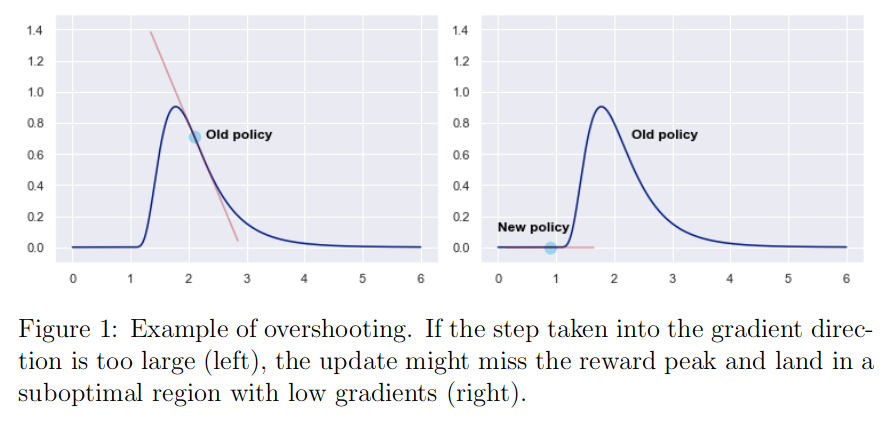
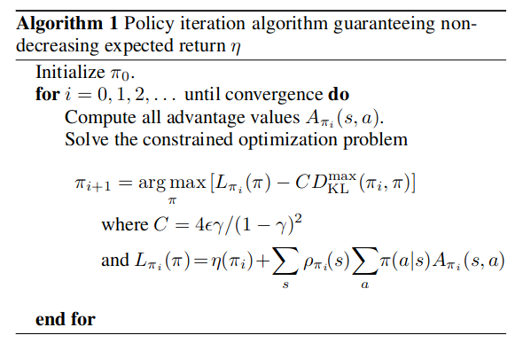

文中有一些问题仍未处理，缺失具体代码的解读，对于TRPO算法的认知仍然存在不清楚的地方，高阶梯度怎么算的
Abstract
这是一篇关于策略梯度算法的总结。首先给出梯度策略，介绍其基本含义，但是初始方案存在一个问题，可以知道梯度变化的方向，不知道梯度的步长。然后，提出自然梯度算法，通过加入约束的方案计算出梯度的步长。接下来，Trust Region Policy Optimization（TRPO）算法在此基础上进一步优化，进一步提出约束，使得满足该约束条件的样本可以稳定提升策略性能。最后，虽然TRPO十分优秀，但是大量的计算使其效率不高，因此进行简化提出Proximal Policy Optimization（PPO）算法。
基于值函数的强化学习：通过递归，求解bellman 方程维护Q值（离散列表或者神经网络），每次选择动作会选择该状态下对应Q值最大的动作。使得期望奖励值最大。
基于策略的强化学习：不再通过价值函数确定动作，而是直接学习策略本身，通过一组参数θ对策略进行参数化，并通过神经网络优化θ。
Reference: * 十分推荐的博客，其延伸阅读有很多关于策略梯度的资料Policy Gradients In Reinforcement Learning Explained * 基于策略强化学习的开篇鼻祖Simple Statistical Gradient-Following Algorithms for Connectionist Reinforcement Learning * 自然梯度算法Natural Gradient Works Efficiently in Learning * 对自然梯度算法很好的总结Natural Policy Gradients In Reinforcement Learning Explained * CMU深度强化学习课程主页GitHub地址 * Trust Region Policy Optimization * Proximal Policy Optimization Algorithms * Approximately Optimal Approximate Reinforcement Learning * Berkeley深度强化学习课程主页 * Efficiently Computing the Fisher Vector Product in TRPO * 代码库Spinning Up in Deep RL
Policy approximation methods : Moving to stochastic policies
在策略近似的方法中，忽略传统的价值函数，直接调整策略本身。通过θ（可能是神经网络参数）参数化策略πθ。
需要解决的问题： 1. 如何评估策略的质量 2. 如何更新θ
策略梯度算法有很多种，这篇文章聚焦于likelihood ratio policy gradients。这种算法的核心思想是将策略转化为一种概率分布πθ(a|s) = P(a|s; θ)，从而返回的不是一个单一的结果，而是动作的分布概率，然后进行采样。
Establishing the objective function
在进行一系列决策之后，得到状态-动作轨迹τ = (s1, a1⋯sT, aT)，每一条轨迹有相应的概率P(τ)和积累回报R(τ) = ∑γtRt（γ是折扣率，Rt是t时刻回报），同时定义目标函数：
$$\begin{align} J(\theta)&=\mathbb{E}_{\tau \sim\pi_{\theta}}R(\tau)=\sum_\tau P(\tau;\theta)R(\tau) \\ \max_{\theta}J(\theta)&=\max_{\theta}E_{\tau \sim\pi_{\theta}}R(\tau)=\max_{\theta}\sum_\tau P(\tau;\theta)R(\tau) \end{align}$$
Defining trajectory probabilities
接下来的主要任务是如何计算P(τ; θ)。
需要处理两类概率： * 策略概率分布：πθ(a|s) = P(a|s; θ)，描述在给定状态与参数下，动作的概率。 * 概率转移分布：P(st + 1|st, at)。在相同的状态下，作出相同的动作，环境也会以概率返回不同的状态。该参数描述在相同环境中，同一动作，下一状态分布的几率。
轨迹τ在策略πθ(a|s)下发生的概率定义为： $$\begin{align} P(\tau;\theta)=\left[\prod_{t=0}^T P(s_{t+1}|s_t,a_t)\cdot \pi_{\theta}(a_t|s_t) \right] \end{align}$$
Deriving the policy gradient
为了得到maxθJ(θ)，可以利用求极值的方法（一阶导数为零），方法采用牛顿梯度迭代法。
为了优化θ，计算目标参数J(θ)对θ的导数。
$$\begin{align} \nabla_{\theta}J(\theta) &= \nabla_{\theta} \mathbb{E}_{\tau \sim\pi_{\theta}}R(\tau)\\ &= \sum_\tau \nabla_{\theta} P(\tau;\theta)R(\tau) \\ &= \sum_\tau P(\tau;\theta)\frac{\nabla_{\theta} P(\tau;\theta)}{P(\tau;\theta)}R(\tau) \\ &= \sum_\tau P(\tau;\theta) \nabla_{\theta} \ln P(\tau;\theta) R(\tau) \\ &= \mathbb{E}_{\tau \sim\pi_{\theta}} R(\tau) \nabla_{\theta} \ln P(\tau;\theta) \\ &= \mathbb{E}_{\tau \sim\pi_{\theta}} R(\tau) \nabla_{\theta}\ln\left[\prod_{t=0}^T P(s_{t+1}|s_t,a_t)\cdot \pi_{\theta}(a_t|s_t) \right] \\ &= \mathbb{E}_{\tau \sim\pi_{\theta}} R(\tau) \left[\nabla_{\theta}\sum_{t=0}^T \ln P(s_{t+1}|s_t,a_t)+ \nabla_{\theta}\sum_{t=0}^T\ln\pi_{\theta}(a_t|s_t) \right] \\ &= \mathbb{E}_{\tau \sim\pi_{\theta}} R(\tau) \nabla_{\theta}\sum_{t=0}^T\ln\pi_{\theta}(a_t|s_t) \\ \end{align}$$
直接计算存在困难，需要近似处理： $$\begin{align} \nabla_{\theta}J(\theta) &= \mathbb{E}_{\tau \sim\pi_{\theta}} R(\tau) \nabla_{\theta} \ln P(\tau;\theta) \\ &\approx \frac{1}{m}\sum_{i=0}^m R(\tau^i) \nabla_{\theta} \ln P(\tau^i;\theta) \\ &= \frac{1}{m}\sum_{i=0}^m R(\tau^i) \sum_{t^i=0}^{T^i} \nabla_{\theta} \ln \pi_{\theta}(a_{t^i}|s_{t^i})\\ &\approx \frac{1}{n} \sum_{i=1}^n R(t^i) \nabla_{\theta} \ln \pi_{\theta}(a_{t^i}|s_{t^i}) \end{align}$$
现在梯度完全可以计算，只需要给出策略πθ的定义，就可以计算出∇θJ(θ)，从而用策略梯度更新规则： $$\begin{align} \theta \leftarrow \theta + \alpha \nabla_{\theta}J(\theta) \end{align}$$
Examples: Softmax and Gaussian policies
为了说明以上策略的可行性，下面给出离散空间与连续空间的两个例子。其中ϕ(s, a)一个包含基本信息的向量，包含当前状态的信息与动作信息，θ为权重因子。假设一个最简单的网络：ϕ(s, a)T ⋅ θ，乘积结果就是对当前状态与动作的评估。
基于以上假设，下面两种常见策略： * Softmax策略 对于离散动作空间，多使用Softmax策略。定义如下： $$\begin{align} \pi_{\theta}(a|s) &= \frac{e^{\phi(s,a)^T \cdot \theta}}{\sum_{a'\in A}e^{\phi(s,a)^T \cdot \theta}} \end{align}$$
对应策略的梯度为： $$\begin{align} \nabla_\theta \ln \pi_{\theta}(a|s) = \phi(s,a)- \sum_{a'\in A}\pi_\theta(a|s)\phi(s,a') \end{align}$$
- 高斯策略 对于连续动作空间，经常使用高斯策略。定义如下： $$\begin{align} \pi_{\theta}(a|s) &= \frac{1}{\sqrt{2\pi}\sigma}e^{-\frac{(a-\mu_\theta)^2}{2\sigma^2}} \end{align}$$ 其中μθ是正态分布的均值，σθ是标准差（这里假设为一个不依赖于θ的超参），实践中均值和方差（一般生成的是对数方差）均是由神经网络生成，具体论述参见VAE相关内容。对应的策略梯度为： $$\begin{align} \nabla_\theta \ln\pi_{\theta}(a|s) = \frac{(a-\mu_\theta)\phi(s)}{\sigma^2} \end{align}$$
Loss functions and Algorithmic implementation (REINFORCE)
在实际的计算中不需要计算梯度，只需要设置损失函数，计算机自动求导就行（r是reward）： $$\begin{align} \cal L(a,s,r) = -\ln(\pi_\theta(a|s))r \end{align}$$
Natural Gradients
尽管自然梯度已被TRPO和PPO等算法超越，但掌握它的基本原理对于理解这些当代RL算法至关重要。
The problems with first-order policy gradients
传统策略梯度算法只是提供了参数的更新方向，没有直接说明更新的步长。下面是众所周知的策略梯度更新方程： $$\begin{align} \theta \leftarrow \theta + \alpha \nabla_{\theta}J(\theta) \end{align}$$ 传统方法基于目标函数梯度∇θJ(θ)与步长因子α。会导致以下两个常见的问题：
- Overshooting:更新直接错过目标。虽然在有监督学习中不成问题，可以通过逐步修改更新率接近目标值。但是在强化学习中，可能会因为新的值导致3梯度消失。 
- Undershooting:步长因子α过小，无法收敛到目标位置。
但是，并不能简单的限制更新步长||Δθ||（Euclidian distance），例如： $$\begin{align} \Delta \theta^* = \arg\max_{||\Delta\theta||<\epsilon}J(\theta+\Delta \theta) \end{align}$$ 因为在不同的参数中，θ对于步长的敏感性不同。
Capping the difference between policies
因为参数对于步长的敏感性不同，因此采用KL散度衡量参数变化前后对分布的影响，将参数θ的变化限制在一定的范围内。 $$\begin{align} D_{KL}(\pi_\theta||\pi_{\theta+\Delta \theta}) = \sum_{x\in \mathcal x}\pi_\theta(x)\ln \left(\frac{\pi_\theta(x)}{\pi_{\theta+\Delta\theta}(x)}\right) \end{align}$$
调整后的更新策略限制为： $$\begin{align} \Delta \theta^* = \arg\max_{D_{KL}(\pi_\theta||\pi_{\theta+\Delta \theta})<\epsilon}J(\theta+\Delta \theta) \end{align}$$
这样处理之后，在参数空间进行更新，同时也能保证策略本身变化不会十分剧烈。但是遇到一个问题，在计算KL散度的时候需要对所有动作空间进行运算，这会对计算带来问题，下面是简化方法。
使用Lagrangian方法，将约束项变成惩罚项： $$\begin{align} \Delta \theta^* = \arg\max_{\Delta\theta}J(\theta+\Delta \theta)-\lambda(D_{KL}(\pi_\theta||\pi_{\theta+\Delta \theta})-\epsilon) \end{align}$$
进行Taylor展开，为了记号统一，以下将θ = θold + Δθ： $$\begin{align} \Delta \theta^* &\approx \arg\max_{\Delta\theta}\left[ J(\theta_{old})+ \nabla_\theta J(\theta)|_{\theta=\theta_{old}}\cdot \Delta\theta-\frac{1}{2}\lambda(\Delta\theta^T \nabla_{\theta}^2 D_{KL}(\pi_{\theta_{old}}||\pi_{\theta}|_{\theta=\theta_{old} })\Delta\theta+\lambda \epsilon\right]\\ \end{align}$$
这里只计算DKL的二阶项，因为其零阶与一阶项均为零，证明如下： $$\begin{align} D_{KL}(p_{\theta_{old}}||p_{\theta}）&\approx D_{KL}(p_{\theta_{old}}||p_{\theta_{old}})+\Delta\theta^T\nabla_{\theta}D_{KL}(p_{\theta_{old}}|p_{\theta})+\frac{1}{2}\Delta\theta^T \nabla_{\theta}^2 D_{KL}(\pi_{\theta_{old}}||\pi_{\theta}|_{\theta=\theta_{old} })\Delta\theta \\ \nabla_{\theta}D_{KL}(p_{\theta_{old}}|p_{\theta})|_{\theta=\theta_{old}} & = -\nabla_{\theta}\mathbb{E}_{x\sim p_{\theta_{old}}}\ln p_{\theta}(x)|_{\theta=\theta_{old}}+\nabla_{\theta}\mathbb{E}_{x\sim p_{\theta_{old}}}\ln p_{\theta_{old}}(x)|_{\theta=\theta_{old}} \\ &= -\mathbb{E}_{x\sim p_{\theta_{old}}}\nabla_{\theta}\ln p_{\theta}(x)|_{\theta=\theta_{old}} \\ &= -\mathbb{E}_{x\sim p_{\theta_{old}}}\frac{1}{p_{\theta_{old}}}\nabla_{\theta} p_{\theta}(x)|_{\theta=\theta_{old}} \\ &= -\int_x p_{\theta_{old}}\frac{1}{p_{\theta_{old}}}\nabla_{\theta} p_{\theta}(x)|_{\theta=\theta_{old}} \\ &= -\int_x \nabla_{\theta} p_{\theta}(x)|_{\theta=\theta_{old}} \\ &= -\nabla_{\theta} \int_x p_{\theta}(x)|_{\theta=\theta_{old}} \\ &= 0 \\ \nabla_{\theta}^2 D_{KL}(\pi_{\theta_{old}}||\pi_{\theta}|_{\theta=\theta_{old} })|_{\theta=\theta_{old}} &= -\mathbb{E}_{x\sim p_{\theta_{old}}}\nabla_{\theta}^2\ln p_{\theta}(x)|_{\theta=\theta_{old}} \\ &= -\mathbb{E}_{x\sim p_{\theta_{old}}}\nabla_{\theta}\left(\frac{\nabla_{\theta} p_{\theta}(x)}{p_{\theta}(x)}\right)|_{\theta=\theta_{old}} \\ &= -\mathbb{E}_{x\sim p_{\theta_{old}}}\nabla_{\theta}\ln p_{\theta}\nabla_{\theta}\ln p_{\theta}^T|_{\theta=\theta_{old}} \\ \end{align}$$
二阶导数可以表述为Hessian matrix，等价于Fisher information matrix（这两个矩阵有什么样的含义？）。
$$\begin{align} F(\theta) &= \mathbb{E}_{\theta}\nabla_{\theta}\ln p_{\theta}\nabla_{\theta}\ln p_{\theta}^T\\ F(\theta_{old}) &=\nabla^2_\theta D_{KL}(p_{\theta_{old}}||p_{\theta})|_{\theta=\theta_{old}} \\ D_{KL}(p_{\theta_{old}}||p_{\theta}）&\approx \frac{1}{2}\Delta\theta^T F(\theta_{old})\Delta\theta \\ &= \frac{1}{2}(\theta-\theta_{old})^T F(\theta_{old})(\theta-\theta_{old}) \\ \end{align}$$
根据以上证明可知： $$\begin{align} \Delta \theta^* &\approx \arg\max_{\Delta\theta}\left[ J(\theta_{old})+ \nabla_\theta J(\theta)|_{\theta=\theta_{old}}\cdot \Delta\theta-\frac{1}{2}\lambda(\Delta\theta^T \nabla_{\theta}^2 D_{KL}(\pi_{\theta_{old}}||\pi_{\theta}|_{\theta=\theta_{old} })\Delta\theta+\lambda \epsilon \right ]\\ &= \arg\max_{\Delta\theta} \left[ \nabla_\theta J(\theta)|_{\theta=\theta_{old}}\cdot \Delta\theta-\frac{1}{2}\lambda\Delta\theta^T F(\theta_{old})\Delta\theta\right]\\ \end{align}$$
计算梯度为零的点： $$\begin{align} 0 &= \frac{\partial}{\partial \Delta \theta} \left[ \nabla_\theta J(\theta)|_{\theta=\theta_{old}}\cdot \Delta\theta-\frac{1}{2}\lambda\Delta\theta^T F(\theta_{old})\Delta\theta\right] \\ &= \nabla_\theta J(\theta)|_{\theta=\theta_{old}}-\frac{1}{2}\lambda F(\theta_{old})\Delta\theta \\ \Delta\theta &= \frac{2}{\lambda}F^{-1}(\theta_{old})\nabla_\theta J(\theta)|_{\theta=\theta_{old}} \end{align}$$
其中$\frac{1}{\lambda}$是一个常数，可以收缩进学习率α。并且根据对更新步长的限制关系，可以得到学习率表达式： $$\begin{align} D_{KL}(p_{\theta_{old}}||p_{\theta}）&\approx \frac{1}{2}(\Delta\theta)^T F(\theta_{old})(\Delta \theta) \\ &= \frac{1}{2}(\alpha g_N)^T F(\theta_{old})(\alpha g_N) <\epsilon \\ \alpha &=\sqrt{\frac{2\epsilon}{(g_N^TFg_N)}} \\ \end{align}$$ 其中gN = F−1(θ)∇θJ(θ)。自然梯度与更新权重可写为： $$\begin{align} \tilde\nabla J(\theta) &= F^{-1}(\theta)\nabla_\theta J(\theta) \\ \Delta \theta &= \alpha \tilde\nabla J(\theta) \\ \theta &= \theta_{old}+\alpha \tilde\nabla J(\theta) \end{align}$$
该方案的核心思想在于通过引入KL散度，对不同参数的步长进行限制，缓解了Overshoot与Undershoot问题。
Algorithm
自然梯度方法在两个方面不同于传统的策略梯度算法： * 考虑到策略对局部变化的敏感性，策略梯度由逆Fisher矩阵校正，而传统的梯度方法假定更新为欧几里得距离。 * 更新步长 α 具有适应梯度和局部敏感性的动态表达式，确保无论参数化如何，策略变化幅度为 ϵ。在传统方法中，通常设置为一些标准值，如0.1或0.01。
但是这个算法也存在缺陷： * Taylor提供了一个局域二阶近似，这会导致Hessian可能非正定（为什么？）。 * Fisher information matrix 计算量过大，尤其是神经网络这种大量参数的情况。
Trust Region Policy Optimization
Trust Region Policy Optimization（TRPO）算法保证了策略梯度算法每次更新始终会提升策略。
定义η为期望折扣奖励（此处符号发生改变）： $$\begin{align} \eta(\pi)=\mathbb{E}_{s_0, a_0, \ldots}\left[\sum_{t=0}^{\infty} \gamma^t r\left(s_t\right)\right] \end{align}$$
定义状态-动作价值函数Qπ(st, at)和价值函数Vπ，以及优势函数Aπ:
$$\begin{align} Q_\pi\left(s_t, a_t\right)&=\mathbb{E}_{s_{t+1}, a_{t+1}, \ldots}\left[\sum_{l=0}^{\infty} \gamma^l r\left(s_{t+l}\right)\right] \\ V_\pi\left(s_t\right)&=\mathbb{E}_{a_t, s_{t+1}, \ldots}\left[\sum_{l=0}^{\infty} \gamma^l r\left(s_{t+l}\right)\right] \\ A_\pi(s, a)&=Q_\pi(s, a)-V_\pi(s) \\ \quad a_t \sim \pi\left(a_t \mid s_t\right), &s_{t+1} \sim P\left(s_{t+1} \mid s_t, a_t\right) \text { for } t \geq 0 \end{align}$$
其中优势函数，是在给定的策略和状态下，计算特定动作a的期望累积奖励与总体期望值（该状态的期望奖励）的差值。
下面的式子表达了策略π与优势策略π̃之间的差异（详细证明参见原始论文附录A）： $$\begin{equation} \eta(\tilde{\pi})=\eta(\pi)+\mathbb{E}_{s_0, a_0, \cdots \sim \tilde{\pi}}\left[\sum_{t=0}^{\infty} \gamma^t A_\pi\left(s_t, a_t\right)\right] \end{equation}$$ 其中at的采样概率为π̃(⋅|st)，st的采样概率依赖于ρπ这里本质上是重要性采样: ρπ(s) = P(s0 = s) + γP(s1 = s) + γ2P(s2 = s) + … 因此将式改写为： $$ \begin{align} \eta(\tilde{\pi}) & =\eta(\pi)+\sum_{t=0}^{\infty} \sum_s P\left(s_t=s \mid \tilde{\pi}\right) \sum_a \tilde{\pi}(a \mid s) \gamma^t A_\pi(s, a) \\ & =\eta(\pi)+\sum_s \sum_{t=0}^{\infty} \gamma^t P\left(s_t=s \mid \tilde{\pi}\right) \sum_a \tilde{\pi}(a \mid s) A_\pi(s, a) \\ & =\eta(\pi)+\sum_s \rho_{\tilde{\pi}}(s) \sum_a \tilde{\pi}(a \mid s) A_\pi(s, a) \\ &= \eta(\pi)+\sum_s \rho_{\tilde{\pi}}(s) \sum_a \pi(a|s)\frac{\tilde{\pi}(a \mid s)}{\pi(a|s)} A_\pi(s, a) \\ &= \eta(\pi)+\mathbb{E}_{s\sim\rho_{\theta_{old}},a\sim\pi_{\theta_{old}}}\left[\frac{\tilde{\pi}(a \mid s)}{\pi(a|s)} A_\pi(s, a)\right] \end{align} $$ 如果能够保证∑aπ̃(a ∣ s)Aπ(s, a) ≥ 0，策略将会始终得以提升或者等价，然而并不能保证为非负，因为一些动作可能导致A为负。而且由于ρπ̃的存在，使得很难直接去优化，因此采用近似，用ρπ替换ρπ̃： $$\begin{align} L_\pi(\tilde{\pi})=\eta(\pi)+\sum \rho_\pi(s) \sum \tilde{\pi}(a \mid s) A_\pi(s, a) \end{align}$$ 可以证明该近似在一阶导数下是精确的，存在以下的关系proof it： $$ \begin{align} L_{\pi_{\theta_0}}\left(\pi_{\theta_0}\right) & =\eta\left(\pi_{\theta_0}\right) \\ \left.\nabla_\theta L_{\pi_{\theta_0}}\left(\pi_\theta\right)\right|_{\theta=\theta_0} & =\left.\nabla_\theta \eta\left(\pi_\theta\right)\right|_{\theta=\theta_0} \end{align} $$ 从实际含义上可以理解，如果策略不变，那么前后策略应当是相同的。第二部分保证，只要能提升Lπθ0，也会提升η。
文献Approximately Optimal Approximate Reinforcement Learning有时间看看，给出了一种混合更新策略，并且证明了更新后的策略的下界。
$$ \begin{aligned} \pi_{\text {new }}(a \mid s)&=(1-\alpha) \pi_{\text {old }}(a \mid s)+\alpha \pi^{\prime}(a \mid s) \\ \eta\left(\pi_{\text {new }}\right) & \geq L_{\pi_{\text {old }}}\left(\pi_{\text {new }}\right)-\frac{2 \epsilon \gamma}{(1-\gamma)^2} \alpha^2 \\ \epsilon&=\max _s\left|\mathbb{E}_{a \sim \pi^{\prime}(a \mid s)}\left[A_\pi(s, a)\right]\right| \end{aligned} $$
Monotonic Improvement Guarantee for General Stochastic Policies
文章 Approximately Optimal Approximate Reinforcement Learning 提出的混合策略过强不够普适用，同时不便于实践，不具备一般性。TRPO算法在此基础上进行弱化，但是同时要保证下界不变。
引入总变差（Total Variation Distance）：$D_{T V}(p \| q)=\frac{1}{2} \sum_i\left|p_i-q_i\right|$，将α定义如下：
$$ $$
上面计算下界的证明参见原文附录。根据TV与KL散度的关系证明它： $$\begin{align} D_{T V}(p \| q)^2 \leq D_{\mathrm{KL}}(p \| q) \end{align}$$ 令DTVmax(π, π̃)2 = maxsDKL(π(⋅|s)∥π̃(⋅|s))，可以得到如下的下界： $$ \begin{align} \eta(\tilde{\pi}) &\geq L_\pi(\tilde{\pi})-C D_{\mathrm{KL}}^{\max }(\pi, \tilde{\pi}) \\ C&=\frac{4 \epsilon \gamma}{(1-\gamma)^2} \end{align} $$
令Mi(π) = Lπi(π) − CDKLmax(πi, π)，利用这个下界证明单调性。
首先: η(πi + 1) ≥ Mi(πi + 1) 并且: η(πi) = Mi(πi) 则： η(πi + 1) − η(πi) ≥ Mi(πi + 1) − M(πi) 如果新策略πi + 1能使得Mi最大，就有Mi(πi + 1) − M(πi) ≥ 0，从而就保证了策略必然稳步提升。
这样通过优化下界便可以使得策略得到稳定的提升。
算法流程如下： 
Optimization of Parameterized Policies
下面将要基于以上的理论基础，在有限的空间以及任意参数下，给出具体的算法。首先更改符号注记，用θ表示重要的参数，而非策略πθ。η(θ) := η(πθ), Lθ(θ̃) := Lπθ(πθ̃), DKL(θ∥θ̃) := DKL(πθ∥πθ̃)
可以将： $$\begin{equation} \underset{\theta}{\operatorname{maximize}}\left[L_{\theta_{\text {old }}}(\theta)-C D_{\mathrm{KL}}^{\max }\left(\theta_{\text {old }}, \theta\right)\right] \end{equation}$$ 改写为： $$\begin{aligned} & \underset{\theta}{\operatorname{maximize}} L_{\theta_{\text {old }}}(\theta) \\ & \text { subject to } D_{\mathrm{KL}}^{\max }\left(\theta_{\text {old }}, \theta\right) \leq \delta \end{aligned}$$ 由于DKLmax的计算过于麻烦，采用带权重的近似替代： D̄KLρ(θ1, θ2) := 𝔼s ∼ ρ[DKL(πθ1(⋅ ∣ s)∥πθ2(⋅ ∣ s))]
基于此最终解决的优化问题形式是： $$\begin{equation} \begin{aligned} & \underset{\theta}{\operatorname{maximize}} L_{\theta_{\text {old }}}(\theta) \\ & \text { subject to } \bar{D}_{\mathrm{KL}}^{\rho_{\theta_{\text {old }}}}\left(\theta_{\text {old }}, \theta\right) \leq \delta . \end{aligned} \end{equation}$$
Connections with Natural Gradients
从TRPO算法最终解决问题的形式可以看出，这是一种针对特定形式优化问题的解决方案。通过计算惩罚因子，从而保证在每一次更新迭代之后就能保证策略得到稳定的提升。为了实现这个目标，引入了两个重要的机制： * Advantage Estimates * 检查机制：随机采样并不能确定结果是否得到提升，但是可以检查采样结果，选取确实提升效果的样本，对于其他样本则直接放弃。
对于自然梯度算法，也是其一个特例。 $$\begin{equation} \begin{aligned} & \underset{\theta}{\operatorname{maximize}}\left[\left.\nabla_\theta L_{\theta_{\text {old }}}(\theta)\right|_{\theta=\theta_{\text {old }}} \cdot\left(\theta-\theta_{\text {old }}\right)\right] \\ & \text { subject to } \frac{1}{2}\left(\theta_{\text {old }}-\theta\right)^T A\left(\theta_{\text {old }}\right)\left(\theta_{\text {old }}-\theta\right) \leq \delta \\ & \text { where } A\left(\theta_{\text {old }}\right)_{i j}= \left. \frac{\partial}{\partial \theta_i} \frac{\partial}{\partial \theta_j} \mathbb{E}_{s \sim \rho_\pi}\left[D_{\mathrm{KL}}\left(\pi\left(\cdot \mid s, \theta_{\text {old }}\right) \| \pi(\cdot \mid s, \theta)\right)\right]\right|_{\theta=\theta_{\text {old }}} \end{aligned} \end{equation}$$ 其中参数更新为$\theta_{\text {new }}=\theta_{\text {old }}+\left.\frac{1}{\lambda} A\left(\theta_{\text {old }}\right)^{-1} \nabla_\theta L(\theta)\right|_{\theta=\theta_{\text {old }}}$，利用TRPO算法，可以限制惩罚项$\frac{1}{\lambda}$，虽然这只是一个很小的算法参数，但是在大问题上显著提升了算法表现能力。
缺失共轭梯度法，与算法简化的实现
Proximal Policy Optimization Algorithms
TRPO算法保证了稳定提升，但是由于计算二阶梯度，运算量十分巨大。为了解决运算量大的问题，提出了一种近似方法，通过对惩罚因子进行限制，大幅减少运算量。
Clipped Surrogate Objective
在TRPO中优化的目标为： $$\begin{equation} L^{C P I}(\theta)=\hat{\mathbb{E}}_t\left[\frac{\pi_\theta\left(a_t \mid s_t\right)}{\pi_{\theta_{\text {old }}}\left(a_t \mid s_t\right)} \hat{A}_t\right]=\hat{\mathbb{E}}_t\left[r_t(\theta) \hat{A}_t\right] \end{equation}$$ 其中$r_t(\theta)=\frac{\pi_\theta\left(a_t \mid s_t\right)}{\pi_{\theta_{\text {old }}}}$，CPI指的是conservative policy iteration。
调整TRPO的优化目标为： $$\begin{equation} L^{C L I P}(\theta)=\hat{\mathbb{E}}_t\left[\min \left(r_t(\theta) \hat{A}_t, \operatorname{clip}\left(r_t(\theta), 1-\epsilon, 1+\epsilon\right) \hat{A}_t\right)\right] \end{equation}$$ 其中ϵ为超参。该式的第一项表示LCPI，第二项利用剪切权重调整了优势函数，将rt限制在一个范围内。最后返回剪切与非剪切之后的较小值，这样将会返回一个下界。
算法框架如下：
Adaptive KL Penalty Coefficient
另一种优化方案是针对惩罚项： $$\begin{equation} L^{K L P E N}(\theta)=\hat{\mathbb{E}}_t\left[\frac{\pi_\theta\left(a_t \mid s_t\right)}{\pi_{\theta_{\text {old }}}\left(a_t \mid s_t\right)} \hat{A}_t-\beta \operatorname{KL}\left[\pi_{\theta_{\text {old }}}\left(\cdot \mid s_t\right), \pi_\theta\left(\cdot \mid s_t\right)\right]\right] \end{equation}$$ 然后计算KL散度，从而确定惩罚因子的大小。 $$ \begin{aligned} &d=\hat{\mathbb{E}}_t\left[\operatorname{KL}\left[\pi_{\theta_{\text {old }}}\left(\cdot \mid s_t\right), \pi_\theta\left(\cdot \mid s_t\right)\right]\right] \\ & \quad-\text { If } d<d_{\text {targ }} / 1.5, \beta \leftarrow \beta / 2 \\ & \quad-\text { If } d>d_{\text {targ }} \times 1.5, \beta \leftarrow \beta \times 2 \end{aligned} $$ 其中1.5, 2是启发式得到，初始值β也是一个超参，但是对结果影响不大。